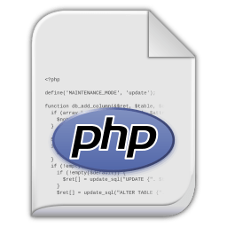
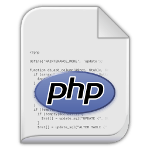
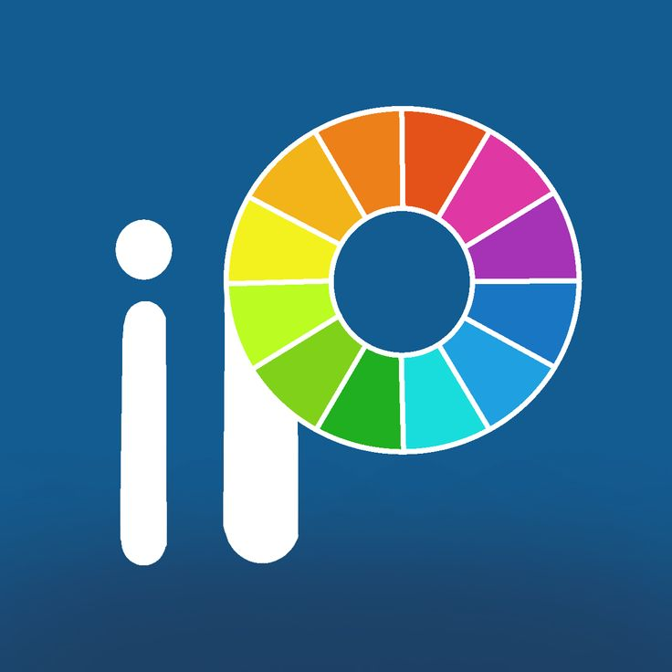
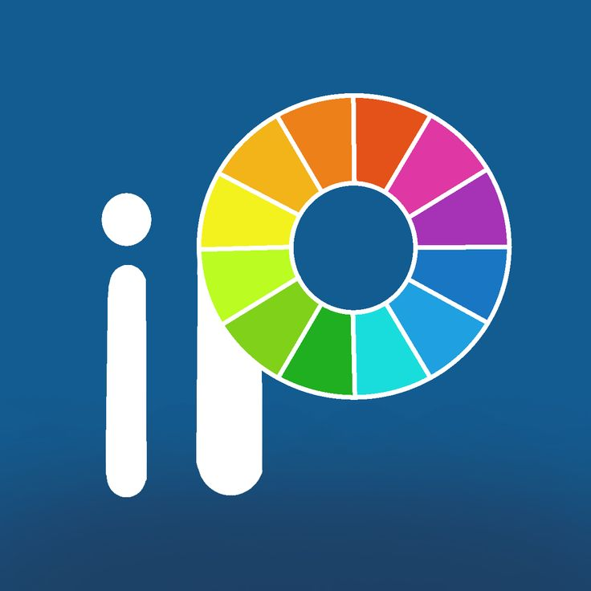

Muhammad Aji Yoga Pratama
Mahasiswa Universitas Negeri Surabaya
Saya adalah seorang pengembangan aplikasi berbasis Web Development serta memiliki keahlian UI/UX, dan juga memiliki kemampuan di bidang design grafis.

Saya adalah seorang pengembangan aplikasi berbasis Web Development serta memiliki keahlian UI/UX, dan juga memiliki kemampuan di bidang design grafis.

Saya adalah Mahasiswa S1 Pendidikan Teknologi Informasi dari Universitas Negeri Surabaya, dengan keahlian di bidang Web Development serta memiliki keahlian UI/UX, dan juga memiliki kemampuan di bidang design grafis. Ketertarikan saya dalam dunia teknologi informasi sejak saat saya masih berada dalam bangku sekolah hingga saat ini. Yang awalnya hanya rasa penasaran kini tumbuh rasa ingin untuk mendalami dunia pemrograman lebih jauh lagi.
Muhammad Aji Yoga Pratama
aji374017@gmail.com
Bojonegoro, Jawa Timur

 


 


Komunikasi yang jelas dan efektif dengan tim dan klien.
Pendekatan kolaboratif dalam pemecahan masalah.
Solusi inovatif untuk masalah kompleks.
Alur kerja efisien dan berorientasi deadline.
Berikut beberapa project terbaru saya.
Aplikasi Website Toko Online Roti adalah platform digital yang dikembangkan oleh mahasiswa sebagai wujud penerapan ilmu kewirausahaan. Website ini melayani penjualan roti dengan fokus pada cita rasa, kualitas, dan harga terjangkau. Selain sebagai sarana bisnis, aplikasi ini juga menjadi media pembelajaran dalam mengelola usaha secara menyeluruh mulai dari produksi hingga pemasaran.
Website statis sederhana berbasis HTML dan CSS yang digunakan untuk keperluan pemesanan tiket acara perayaan 1 Dekade Anniversary. Website ini terdiri dari antarmuka utama untuk pengguna dan halaman admin, serta beberapa elemen visual pendukung seperti gambar dan ikon.
Aplikasi LAB rumah sakit dirancang untuk mengotomatisasi manajemen laboratorium klinik, sehingga meningkatkan efisiensi operasional dan kualitas layanan kesehatan. Dengan fitur-fitur seperti pendaftaran pasien, pemrosesan hasil tes, dan distribusi laporan secara digital, aplikasi ini mempermudah akses pasien terhadap informasi dan hasil pemeriksaan.
Aplikasi Transaksi Penjualan merupakan sebuah perangkat lunak berbasis desktop yang dirancang untuk membantu proses pencatatan dan pengelolaan transaksi penjualan secara lebih efektif dan efisien. Aplikasi ini dikembangkan sebagai bagian dari tugas akhir semester pada mata kuliah Pemrograman Visual, dengan tujuan memberikan solusi digital bagi pelaku usaha kecil hingga menengah dalam mengelola data penjualan mereka.
Aplikasi ini merupakan aplikasi kasir desktop berbasis Java yang dirancang untuk mempermudah proses transaksi penjualan, khususnya di bidang kuliner atau restoran. Aplikasi ini telah dilengkapi dengan antarmuka pengguna grafis (GUI) yang intuitif menggunakan Java Swing, sehingga memudahkan pengguna dalam mengoperasikan sistem secara interaktif. Selain itu, aplikasi ini juga memiliki fitur perhitungan harga makanan secara otomatis, termasuk pengelolaan menu, input jumlah pesanan, serta total harga yang harus dibayarkan pelanggan.
Aplikasi Penjualan Toko Madura adalah sistem manajemen yang dirancang khusus untuk membantu toko dalam mengelola operasional penjualan dan inventaris dengan lebih efisien. Dengan fitur lengkap, aplikasi ini memungkinkan pengguna untuk mengelola stok barang, transaksi penjualan, pembelian, serta hubungan dengan supplier secara mudah dan akurat. Pengguna dapat memantau stok barang secara real-time, menjaga ketersediaan barang, dan melakukan transaksi dengan sistem yang transparan dan terintegrasi.
SDN Sukosewu
SMPN 2 Paciran Lamongan
MAN 1 Bojonegoro
Universitas Negeri Surabaya
Jika Anda ingin menghubungi saya, silahkan kirim pesan lewat WhatsApp saya.